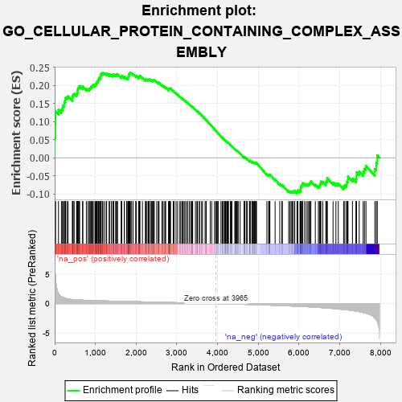
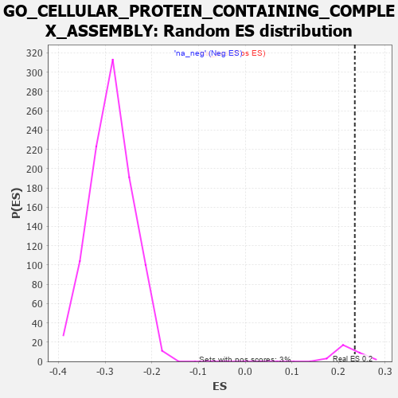

| | | Dataset | 7d |
| Phenotype | NoPhenotypeAvailable |
| Upregulated in class | na_pos |
| GeneSet | GO_CELLULAR_PROTEIN_CONTAINING_COMPLEX_ASSEMBLY |
| Enrichment Score (ES) | 0.23482591 |
| Normalized Enrichment Score (NES) | 1.0794171 |
| Nominal p-value | 0.12903225 |
| FDR q-value | 0.65573436 |
| FWER p-Value | 1.0 |
Table: GSEA Results Summary

Fig 1: Enrichment plot: GO_CELLULAR_PROTEIN_CONTAINING_COMPLEX_ASSEMBLY
Profile of the Running ES Score & Positions of GeneSet Members on the Rank Ordered List
| PROBE | GENE SYMBOL | GENE_TITLE | RANK IN GENE LIST | RANK METRIC SCORE | RUNNING ES | CORE ENRICHMENT | | 1 | EIF3J | | | 1 | 7.125 | 0.0554 | Yes |
| 2 | H2BE1 | | | 16 | 4.938 | 0.0921 | Yes |
| 3 | H2AX | | | 20 | 4.738 | 0.1287 | Yes |
| 4 | UBE2K | | | 94 | 1.739 | 0.1328 | Yes |
| 5 | AXIN1 | | | 166 | 1.159 | 0.1326 | Yes |
| 6 | TPPP3 | | | 195 | 1.079 | 0.1374 | Yes |
| 7 | SWI5 | | | 203 | 1.045 | 0.1446 | Yes |
| 8 | CDC45 | | | 239 | 0.950 | 0.1475 | Yes |
| 9 | SRSF9 | | | 240 | 0.950 | 0.1549 | Yes |
| 10 | COX18 | | | 264 | 0.890 | 0.1589 | Yes |
| 11 | TBX20 | | | 267 | 0.880 | 0.1655 | Yes |
| 12 | CCNH | | | 301 | 0.817 | 0.1676 | Yes |
| 13 | BOP1 | | | 330 | 0.768 | 0.1699 | Yes |
| 14 | RRN3 | | | 438 | 0.667 | 0.1612 | Yes |
| 15 | CENPS | | | 439 | 0.666 | 0.1664 | Yes |
| 16 | NUBPL | | | 442 | 0.665 | 0.1713 | Yes |
| 17 | HAT1 | | | 454 | 0.659 | 0.1751 | Yes |
| 18 | ORC3 | | | 479 | 0.644 | 0.1770 | Yes |
| 19 | PSMG1 | | | 538 | 0.615 | 0.1742 | Yes |
| 20 | MCM2 | | | 546 | 0.614 | 0.1781 | Yes |
| 21 | COA4 | | | 561 | 0.609 | 0.1810 | Yes |
| 22 | NLE1 | | | 565 | 0.609 | 0.1854 | Yes |
| 23 | HIRA | | | 568 | 0.608 | 0.1899 | Yes |
| 24 | MX1 | | | 578 | 0.604 | 0.1934 | Yes |
| 25 | DHX33 | | | 605 | 0.593 | 0.1947 | Yes |
| 26 | MCM7 | | | 612 | 0.591 | 0.1985 | Yes |
| 27 | CDK7 | | | 686 | 0.564 | 0.1934 | Yes |
| 28 | ATP23 | | | 691 | 0.562 | 0.1973 | Yes |
| 29 | CPSF6 | | | 778 | 0.538 | 0.1903 | Yes |
| 30 | RPA1 | | | 817 | 0.527 | 0.1895 | Yes |
| 31 | RPA2 | | | 851 | 0.519 | 0.1893 | Yes |
| 32 | ASF1B | | | 863 | 0.515 | 0.1918 | Yes |
| 33 | POGZ | | | 887 | 0.509 | 0.1928 | Yes |
| 34 | HMGB2 | | | 892 | 0.507 | 0.1963 | Yes |
| 35 | PRPF3 | | | 917 | 0.503 | 0.1971 | Yes |
| 36 | SF3A2 | | | 928 | 0.500 | 0.1997 | Yes |
| 37 | ADRM1 | | | 948 | 0.496 | 0.2011 | Yes |
| 38 | COX10 | | | 990 | 0.485 | 0.1996 | Yes |
| 39 | EIF3F | | | 995 | 0.485 | 0.2028 | Yes |
| 40 | PSMG2 | | | 1018 | 0.480 | 0.2037 | Yes |
| 41 | PWP2 | | | 1030 | 0.477 | 0.2060 | Yes |
| 42 | ISY1 | | | 1036 | 0.476 | 0.2091 | Yes |
| 43 | TAF9 | | | 1046 | 0.475 | 0.2116 | Yes |
| 44 | XPA | | | 1070 | 0.469 | 0.2123 | Yes |
| 45 | AIFM1 | | | 1072 | 0.469 | 0.2158 | Yes |
| 46 | DENR | | | 1084 | 0.467 | 0.2180 | Yes |
| 47 | RAD51 | | | 1090 | 0.466 | 0.2210 | Yes |
| 48 | COA6 | | | 1126 | 0.459 | 0.2200 | Yes |
| 49 | NUP93 | | | 1127 | 0.459 | 0.2236 | Yes |
| 50 | SRC | | | 1128 | 0.459 | 0.2272 | Yes |
| 51 | NCK2 | | | 1131 | 0.458 | 0.2305 | Yes |
| 52 | MCM3 | | | 1142 | 0.456 | 0.2327 | Yes |
| 53 | ERCC3 | | | 1173 | 0.451 | 0.2324 | Yes |
| 54 | CLP1 | | | 1182 | 0.450 | 0.2348 | Yes |
| 55 | RBBP7 | | | 1220 | 0.443 | 0.2335 | No |
| 56 | CDC73 | | | 1265 | 0.436 | 0.2312 | No |
| 57 | EIF3D | | | 1276 | 0.435 | 0.2333 | No |
| 58 | TBCD | | | 1338 | 0.422 | 0.2286 | No |
| 59 | SF3A1 | | | 1346 | 0.420 | 0.2310 | No |
| 60 | FKBP4 | | | 1390 | 0.412 | 0.2286 | No |
| 61 | LSM4 | | | 1426 | 0.405 | 0.2272 | No |
| 62 | RBX1 | | | 1445 | 0.401 | 0.2280 | No |
| 63 | GRWD1 | | | 1449 | 0.401 | 0.2308 | No |
| 64 | DDX28 | | | 1498 | 0.390 | 0.2276 | No |
| 65 | MCM6 | | | 1506 | 0.389 | 0.2297 | No |
| 66 | SCO1 | | | 1536 | 0.385 | 0.2289 | No |
| 67 | UQCC1 | | | 1542 | 0.384 | 0.2313 | No |
| 68 | DRG1 | | | 1633 | 0.368 | 0.2225 | No |
| 69 | DDB1 | | | 1642 | 0.366 | 0.2243 | No |
| 70 | TPPP | | | 1646 | 0.365 | 0.2268 | No |
| 71 | TPX2 | | | 1708 | 0.355 | 0.2216 | No |
| 72 | ERCC2 | | | 1712 | 0.354 | 0.2240 | No |
| 73 | AGO2 | | | 1767 | 0.343 | 0.2196 | No |
| 74 | STRAP | | | 1793 | 0.339 | 0.2190 | No |
| 75 | COX19 | | | 1807 | 0.336 | 0.2200 | No |
| 76 | PSMD4 | | | 1811 | 0.335 | 0.2222 | No |
| 77 | RPF2 | | | 1814 | 0.335 | 0.2245 | No |
| 78 | ERAL1 | | | 1823 | 0.333 | 0.2261 | No |
| 79 | TBCC | | | 1826 | 0.333 | 0.2284 | No |
| 80 | LSM2 | | | 1829 | 0.332 | 0.2308 | No |
| 81 | UVRAG | | | 1831 | 0.332 | 0.2332 | No |
| 82 | AP2S1 | | | 1846 | 0.329 | 0.2340 | No |
| 83 | SMAD4 | | | 1860 | 0.326 | 0.2348 | No |
| 84 | PAK3 | | | 1889 | 0.322 | 0.2337 | No |
| 85 | EIF3B | | | 1926 | 0.317 | 0.2315 | No |
| 86 | GPX4 | | | 1989 | 0.306 | 0.2258 | No |
| 87 | EIF3L | | | 2005 | 0.304 | 0.2263 | No |
| 88 | LUC7L | | | 2060 | 0.297 | 0.2216 | No |
| 89 | SF3B1 | | | 2071 | 0.295 | 0.2226 | No |
| 90 | SART3 | | | 2084 | 0.293 | 0.2233 | No |
| 91 | CENPE | | | 2086 | 0.293 | 0.2254 | No |
| 92 | TAF7 | | | 2092 | 0.292 | 0.2271 | No |
| 93 | EIF3G | | | 2155 | 0.284 | 0.2212 | No |
| 94 | BAZ2A | | | 2227 | 0.272 | 0.2141 | No |
| 95 | COX15 | | | 2238 | 0.270 | 0.2149 | No |
| 96 | CREB1 | | | 2243 | 0.269 | 0.2165 | No |
| 97 | SRSF1 | | | 2252 | 0.267 | 0.2176 | No |
| 98 | AAR2 | | | 2291 | 0.261 | 0.2147 | No |
| 99 | WASF1 | | | 2303 | 0.259 | 0.2153 | No |
| 100 | EIF3K | | | 2314 | 0.258 | 0.2160 | No |
| 101 | MED25 | | | 2320 | 0.257 | 0.2173 | No |
| 102 | OXA1L | | | 2355 | 0.252 | 0.2149 | No |
| 103 | SLU7 | | | 2382 | 0.248 | 0.2135 | No |
| 104 | TAF1B | | | 2404 | 0.245 | 0.2126 | No |
| 105 | OMA1 | | | 2408 | 0.244 | 0.2142 | No |
| 106 | MET | | | 2430 | 0.240 | 0.2133 | No |
| 107 | LYRM7 | | | 2434 | 0.239 | 0.2148 | No |
| 108 | KAT6A | | | 2444 | 0.237 | 0.2155 | No |
| 109 | CDT1 | | | 2505 | 0.226 | 0.2094 | No |
| 110 | SRP54 | | | 2544 | 0.220 | 0.2062 | No |
| 111 | EIF3H | | | 2558 | 0.219 | 0.2062 | No |
| 112 | PSMD5 | | | 2560 | 0.218 | 0.2078 | No |
| 113 | EIF3E | | | 2634 | 0.207 | 0.1999 | No |
| 114 | NOP2 | | | 2648 | 0.206 | 0.1999 | No |
| 115 | TAF12 | | | 2686 | 0.201 | 0.1966 | No |
| 116 | DDX1 | | | 2718 | 0.196 | 0.1941 | No |
| 117 | SLIT2 | | | 2724 | 0.195 | 0.1950 | No |
| 118 | ATR | | | 2800 | 0.183 | 0.1867 | No |
| 119 | FER | | | 2803 | 0.183 | 0.1879 | No |
| 120 | BRK1 | | | 2805 | 0.183 | 0.1892 | No |
| 121 | EIF3I | | | 2806 | 0.183 | 0.1906 | No |
| 122 | SRP19 | | | 2817 | 0.181 | 0.1907 | No |
| 123 | KAT6B | | | 2821 | 0.180 | 0.1917 | No |
| 124 | EIF3C | | | 2832 | 0.179 | 0.1918 | No |
| 125 | CAND1 | | | 2845 | 0.177 | 0.1916 | No |
| 126 | RBM5 | | | 2910 | 0.164 | 0.1846 | No |
| 127 | TAZ | | | 2933 | 0.161 | 0.1830 | No |
| 128 | UBE2S | | | 2980 | 0.153 | 0.1782 | No |
| 129 | COX17 | | | 3019 | 0.147 | 0.1744 | No |
| 130 | MAP2 | | | 3074 | 0.140 | 0.1685 | No |
| 131 | CUL4A | | | 3097 | 0.137 | 0.1667 | No |
| 132 | EIF3M | | | 3133 | 0.133 | 0.1632 | No |
| 133 | TAF11 | | | 3147 | 0.130 | 0.1625 | No |
| 134 | PSMD9 | | | 3179 | 0.125 | 0.1595 | No |
| 135 | TWF1 | | | 3199 | 0.123 | 0.1580 | No |
| 136 | FCHO2 | | | 3238 | 0.115 | 0.1539 | No |
| 137 | NUP98 | | | 3261 | 0.112 | 0.1519 | No |
| 138 | SMAD3 | | | 3303 | 0.105 | 0.1474 | No |
| 139 | SMAD1 | | | 3337 | 0.099 | 0.1439 | No |
| 140 | FMN1 | | | 3363 | 0.095 | 0.1414 | No |
| 141 | VPS16 | | | 3370 | 0.093 | 0.1414 | No |
| 142 | GMFB | | | 3381 | 0.091 | 0.1408 | No |
| 143 | DDX3X | | | 3388 | 0.091 | 0.1407 | No |
| 144 | TGS1 | | | 3456 | 0.084 | 0.1327 | No |
| 145 | TBP | | | 3493 | 0.078 | 0.1286 | No |
| 146 | FES | | | 3501 | 0.077 | 0.1283 | No |
| 147 | XPC | | | 3509 | 0.076 | 0.1280 | No |
| 148 | TTC19 | | | 3555 | 0.066 | 0.1227 | No |
| 149 | SURF1 | | | 3558 | 0.066 | 0.1229 | No |
| 150 | COG4 | | | 3608 | 0.058 | 0.1170 | No |
| 151 | RIC3 | | | 3629 | 0.055 | 0.1148 | No |
| 152 | DHX9 | | | 3693 | 0.044 | 0.1070 | No |
| 153 | HSF1 | | | 3718 | 0.039 | 0.1042 | No |
| 154 | DAXX | | | 3722 | 0.038 | 0.1041 | No |
| 155 | CHD1L | | | 3819 | 0.024 | 0.0918 | No |
| 156 | DGKQ | | | 3856 | 0.020 | 0.0873 | No |
| 157 | NRG3 | | | 3925 | 0.005 | 0.0785 | No |
| 158 | PPM1A | | | 3953 | 0.002 | 0.0750 | No |
| 159 | SF3A3 | | | 3976 | -0.003 | 0.0722 | No |
| 160 | ECSIT | | | 4002 | -0.008 | 0.0690 | No |
| 161 | PARP1 | | | 4014 | -0.010 | 0.0677 | No |
| 162 | DDX20 | | | 4083 | -0.021 | 0.0590 | No |
| 163 | MTOR | | | 4114 | -0.025 | 0.0553 | No |
| 164 | ABL1 | | | 4125 | -0.027 | 0.0542 | No |
| 165 | MZT1 | | | 4145 | -0.032 | 0.0520 | No |
| 166 | SYNJ1 | | | 4173 | -0.038 | 0.0488 | No |
| 167 | AP2B1 | | | 4185 | -0.039 | 0.0476 | No |
| 168 | TBCA | | | 4194 | -0.041 | 0.0469 | No |
| 169 | VPS11 | | | 4202 | -0.041 | 0.0463 | No |
| 170 | TAF7L | | | 4205 | -0.042 | 0.0464 | No |
| 171 | ARPC2 | | | 4232 | -0.047 | 0.0434 | No |
| 172 | TBCEL | | | 4241 | -0.049 | 0.0427 | No |
| 173 | ARL2 | | | 4254 | -0.050 | 0.0416 | No |
| 174 | RRS1 | | | 4256 | -0.051 | 0.0418 | No |
| 175 | RSF1 | | | 4267 | -0.053 | 0.0410 | No |
| 176 | BAG4 | | | 4314 | -0.061 | 0.0355 | No |
| 177 | OPA1 | | | 4330 | -0.065 | 0.0340 | No |
| 178 | ADRB2 | | | 4352 | -0.068 | 0.0318 | No |
| 179 | EIF2D | | | 4423 | -0.081 | 0.0234 | No |
| 180 | COA3 | | | 4435 | -0.083 | 0.0226 | No |
| 181 | SPAG1 | | | 4453 | -0.085 | 0.0211 | No |
| 182 | EPS8 | | | 4474 | -0.088 | 0.0191 | No |
| 183 | HIP1 | | | 4485 | -0.092 | 0.0186 | No |
| 184 | ACAD9 | | | 4507 | -0.096 | 0.0166 | No |
| 185 | ABI2 | | | 4554 | -0.106 | 0.0114 | No |
| 186 | TAF10 | | | 4652 | -0.128 | -0.0002 | No |
| 187 | DDX23 | | | 4658 | -0.129 | 0.0002 | No |
| 188 | ARPC3 | | | 4659 | -0.129 | 0.0012 | No |
| 189 | CHMP3 | | | 4660 | -0.129 | 0.0022 | No |
| 190 | ARF6 | | | 4704 | -0.140 | -0.0023 | No |
| 191 | WASF3 | | | 4730 | -0.145 | -0.0044 | No |
| 192 | RTN4 | | | 4783 | -0.154 | -0.0099 | No |
| 193 | SRPK2 | | | 4790 | -0.155 | -0.0095 | No |
| 194 | FLII | | | 4795 | -0.156 | -0.0088 | No |
| 195 | TPPP2 | | | 4800 | -0.157 | -0.0081 | No |
| 196 | EIF3A | | | 4842 | -0.167 | -0.0121 | No |
| 197 | DLG1 | | | 4860 | -0.169 | -0.0130 | No |
| 198 | TBCE | | | 4862 | -0.170 | -0.0118 | No |
| 199 | CLU | | | 4889 | -0.174 | -0.0138 | No |
| 200 | VAMP8 | | | 4905 | -0.179 | -0.0144 | No |
| 201 | CAPZB | | | 4908 | -0.179 | -0.0133 | No |
| 202 | ATRX | | | 4929 | -0.184 | -0.0144 | No |
| 203 | XRCC5 | | | 4946 | -0.187 | -0.0150 | No |
| 204 | PRKDC | | | 4955 | -0.189 | -0.0146 | No |
| 205 | ATM | | | 5210 | -0.249 | -0.0456 | No |
| 206 | SSH1 | | | 5254 | -0.258 | -0.0492 | No |
| 207 | PICK1 | | | 5265 | -0.263 | -0.0484 | No |
| 208 | CELF4 | | | 5275 | -0.266 | -0.0475 | No |
| 209 | ERCC5 | | | 5284 | -0.268 | -0.0465 | No |
| 210 | LATS1 | | | 5412 | -0.298 | -0.0607 | No |
| 211 | TRIM9 | | | 5526 | -0.327 | -0.0728 | No |
| 212 | NDE1 | | | 5578 | -0.339 | -0.0768 | No |
| 213 | TTC17 | | | 5589 | -0.341 | -0.0754 | No |
| 214 | MX2 | | | 5745 | -0.390 | -0.0925 | No |
| 215 | VAMP7 | | | 5777 | -0.399 | -0.0934 | No |
| 216 | BBS4 | | | 5806 | -0.407 | -0.0939 | No |
| 217 | CELF5 | | | 5830 | -0.414 | -0.0936 | No |
| 218 | ARL6 | | | 5847 | -0.417 | -0.0924 | No |
| 219 | ARPC4 | | | 5886 | -0.430 | -0.0940 | No |
| 220 | SET | | | 5895 | -0.434 | -0.0917 | No |
| 221 | DCTN1 | | | 5950 | -0.454 | -0.0951 | No |
| 222 | CENPJ | | | 5968 | -0.460 | -0.0938 | No |
| 223 | TTBK1 | | | 5969 | -0.460 | -0.0902 | No |
| 224 | JMY | | | 6023 | -0.479 | -0.0933 | No |
| 225 | CKAP5 | | | 6032 | -0.482 | -0.0906 | No |
| 226 | RAC1 | | | 6036 | -0.484 | -0.0872 | No |
| 227 | VAMP3 | | | 6043 | -0.487 | -0.0842 | No |
| 228 | ADD2 | | | 6046 | -0.487 | -0.0806 | No |
| 229 | EVL | | | 6052 | -0.490 | -0.0775 | No |
| 230 | CALR | | | 6077 | -0.499 | -0.0767 | No |
| 231 | DBNL | | | 6084 | -0.501 | -0.0736 | No |
| 232 | UBB | | | 6090 | -0.503 | -0.0703 | No |
| 233 | GBA2 | | | 6136 | -0.515 | -0.0721 | No |
| 234 | PSIP1 | | | 6177 | -0.531 | -0.0732 | No |
| 235 | SMAD2 | | | 6216 | -0.541 | -0.0739 | No |
| 236 | VDAC2 | | | 6242 | -0.553 | -0.0728 | No |
| 237 | SVIL | | | 6259 | -0.558 | -0.0706 | No |
| 238 | DRC1 | | | 6278 | -0.565 | -0.0685 | No |
| 239 | TRAF7 | | | 6290 | -0.571 | -0.0655 | No |
| 240 | RALB | | | 6399 | -0.617 | -0.0747 | No |
| 241 | CELF3 | | | 6475 | -0.651 | -0.0793 | No |
| 242 | PTBP2 | | | 6499 | -0.661 | -0.0772 | No |
| 243 | TRPV4 | | | 6515 | -0.668 | -0.0739 | No |
| 244 | VAMP2 | | | 6525 | -0.672 | -0.0698 | No |
| 245 | KANK1 | | | 6536 | -0.678 | -0.0658 | No |
| 246 | ARF1 | | | 6583 | -0.701 | -0.0663 | No |
| 247 | VPS18 | | | 6659 | -0.743 | -0.0703 | No |
| 248 | CLIP1 | | | 6667 | -0.746 | -0.0654 | No |
| 249 | CATIP | | | 6690 | -0.756 | -0.0623 | No |
| 250 | PAK1 | | | 6691 | -0.757 | -0.0564 | No |
| 251 | FHOD3 | | | 6835 | -0.834 | -0.0685 | No |
| 252 | MYH11 | | | 6905 | -0.870 | -0.0707 | No |
| 253 | DNM1L | | | 6963 | -0.913 | -0.0709 | No |
| 254 | TTC25 | | | 7094 | -0.992 | -0.0801 | No |
| 255 | RBBP4 | | | 7123 | -1.010 | -0.0758 | No |
| 256 | COTL1 | | | 7166 | -1.046 | -0.0731 | No |
| 257 | TEKT2 | | | 7177 | -1.053 | -0.0662 | No |
| 258 | OTOF | | | 7198 | -1.069 | -0.0605 | No |
| 259 | CETN2 | | | 7200 | -1.070 | -0.0523 | No |
| 260 | ARMC4 | | | 7311 | -1.181 | -0.0573 | No |
| 261 | WDR78 | | | 7396 | -1.261 | -0.0584 | No |
| 262 | UBC | | | 7410 | -1.274 | -0.0502 | No |
| 263 | WDR63 | | | 7411 | -1.276 | -0.0402 | No |
| 264 | CPTP | | | 7477 | -1.373 | -0.0379 | No |
| 265 | NLRC3 | | | 7574 | -1.515 | -0.0386 | No |
| 266 | KANK3 | | | 7605 | -1.559 | -0.0303 | No |
| 267 | TAF1 | | | 7643 | -1.633 | -0.0224 | No |
| 268 | TRAF2 | | | 7861 | -2.481 | -0.0312 | No |
| 269 | CAV3 | | | 7896 | -2.739 | -0.0143 | No |
| 270 | MDN1 | | | 7921 | -3.061 | 0.0065 | No |
Table: GSEA details [plain text format]

Fig 2: GO_CELLULAR_PROTEIN_CONTAINING_COMPLEX_ASSEMBLY: Random ES distribution
Gene set null distribution of ES for GO_CELLULAR_PROTEIN_CONTAINING_COMPLEX_ASSEMBLY